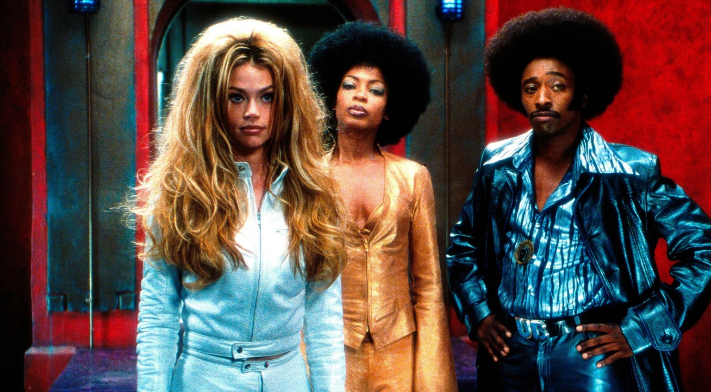

In 2002, a movie arrived with an Afro the size of a satellite dish, a villain called The Man, and a plot about stopping a conspiracy to turn Black America into a pale, mayo-loving monoculture. Undercover Brother was loud, silly, and a little reckless, and it was made by a major studio for a wide theatrical release.
Try to imagine that pitch landing at a studio today, and you start to see how much the movie business has changed.
From Web Cartoon to Wide Release
The character did not begin in a movie theater. Undercover Brother started as an animated series on the early internet, created by writer John Ridley, who would later become known for dramatic screenwriting. The idea, a funky secret agent working for a Black organization called the Brotherhood, was simple enough to survive the move to live action, and Universal turned it into a feature directed by Malcolm D. Lee.
That origin matters because it shows how different the development process was. A studio in the early 2000s could look at a popular online property, attach a likable star and a mid-sized budget, and release it nationwide without needing a built-in global fan base. Today the same property would be expected to arrive with a franchise plan, merchandise potential and an international marketing strategy, and many ideas never survive that test.

The mid-budget comedy is an endangered species
Undercover Brother worked because of the economics of its era. It was a modestly priced comedy, around $20 million by most accounts, that could turn a profit in theaters and then make real money on DVD. Studios in the early 2000s loved this model: cast a charismatic lead like Eddie Griffin, surround him with a deep bench of comedic talent (Chris Kattan, Chi McBride, Aunjanue Ellis, Neil Patrick Harris, and Dave Chappelle in a small, memorable turn), and let the jokes carry it.
That model collapsed. DVD sales fell off a cliff, and studios shifted their theatrical resources toward franchises and tentpoles, where a single hit can justify a whole year. A $20 million comedy that might gross $40 million is simply not a priority at a company chasing billion-dollar returns. The middle of the market hollowed out, and comedies like this one were the first casualties.
The change was gradual rather than sudden. In the years after Undercover Brother, the home video market that once guaranteed a second payday for a modest theatrical performer shrank steadily, and with it went the safety net that allowed studios to take small risks. Executives could no longer count on a rental and sales tail to rescue a film that opened quietly, so the pressure fell on opening weekend, and comedies, which often build audiences through word of mouth, were poorly suited to that kind of pressure.
An ensemble that carried the jokes
One reason the film is still remembered is the way it spreads its humor across a large cast. Griffin plays the title hero with a swagger that never takes itself seriously, while Denise Richards plays the White She-Devil, the villain’s secret weapon, and Billy Dee Williams appears as the leader of the Brotherhood’s general staff. Chappelle’s small appearance as a conspiracy-obsessed member of the team is the kind of turn that viewers recall years later, and Harris rounds out a supporting cast that is full of recognizable comic faces.
That approach, where even small roles are given a distinct comic identity, is harder to find in current studio comedies. A film built around one big star and a tightly managed brand tends to leave less space for scene-stealing supporting players, and the result is often a more cautious tone. The breadth of the Undercover Brother cast is a reminder of a time when a comedy could rely on the strength of its bench.
The spoof went stale
Undercover Brother belonged to a golden age of genre parody. It riffed on blaxploitation films, Bond-style spy capers, and 1970s pop culture in the same spirit as Austin Powers. Parody works best when the audience shares a deep familiarity with the thing being sent up, and when the form still feels fresh.
By the late 2000s, the spoof genre had been run into the ground by cheap imitators. Audiences got tired of movies that substituted pop-culture references for actual jokes. Once the genre became shorthand for lazy, it became hard to sell even the clever versions. Studios stopped greenlighting parodies, and the few that appeared tended to be low-budget and low-ambition.
The source material is part of the story. Blaxploitation films such as Shaft and Superfly in the early 1970s created a style of confident, stylish Black heroes that later comedies could play with. A parody needs viewers who recognize those references, and as the original films receded into film history, the shared knowledge that makes such jokes land became less common. A few works have kept the tradition alive, including the cult favorite Black Dynamite and the 2019 film Dolemite Is My Name, but they speak to niche audiences or are made as prestige projects rather than as broad studio comedies.
Race comedy became a higher-risk bet
Here is the part people argue about most. Undercover Brother is built on racial stereotypes, which it deploys to mock racism and white cultural dominance. It gets away with this because its target is the absurdity of the stereotypes themselves, and because the film is clearly in on the joke.
Satire that plays with stereotypes needs an audience willing to read intent generously, and it needs a studio willing to defend it. Social media changed the calculus for both. A single clip stripped of context can ignite a controversy before the movie opens, and executives who once shrugged at edgy material now run it through a lot more scrutiny.
That doesn't mean sharp racial satire is dead. Work like Sorry to Bother You, Atlanta, and Get Out proves otherwise. But that work tends to be more overtly political and more auteur-driven, and it often lives in prestige territory rather than in the broad, goofy, crowd-pleasing lane Undercover Brother occupied. The wide-release, anything-for-a-laugh version of the genre is the one that went quiet.
Streaming changed what gets made
Streaming services need volume and subscriber retention, not box office. That should have been a lifeline for mid-range comedies, and in some cases it was. But the algorithmic logic of streaming favors recognizable IP, true crime, and prestige dramas that generate buzz. Comedies are also hard to export globally, since humor is culturally specific and international audiences matter more to the bottom line than they used to. A joke rooted in 1970s Black American pop culture is a tougher sell than a superhero.
Tellingly, the franchise didn't die so much as get downgraded. A sequel, Undercover Brother 2, arrived in 2019 as a direct-to-video release with a different cast and a fraction of the attention. That is where this kind of movie lives now.
The cult-favorite pipeline
Comedies have always depended on repeat viewing more than most genres. A joke that works the first time can become a catchphrase on the third, and a film that opens modestly can gain a reputation through rentals, cable showings and conversations among friends. The home video era was especially friendly to that process, because it gave a film like Undercover Brother years to find its audience outside the opening weekend.
Today the path is less predictable. A streaming title can appear and vanish within weeks, and without a physical product or a steady television presence, a comedy has fewer chances to build a following over time. That change affects what studios are willing to make, since a film that depends on slow discovery is a harder bet in a system that rewards immediate numbers. It also affects viewers, who may never encounter a movie that would have been a quiet favorite a generation ago.
The counterexamples worth noting
It would be too simple to say that the mid-budget comedy has vanished entirely. Malcolm D. Lee, the director of Undercover Brother, later made Girls Trip in 2017, a modestly budgeted ensemble comedy that became a major theatrical hit and proved audiences would still turn out for a loose, character-driven laugh riot. Bridesmaids in 2011 offered a similar lesson. These successes show that the audience has not disappeared, only that the number of films aimed at it has shrunk.
What these examples have in common is a strong hook and a confident ensemble, the same ingredients that powered Undercover Brother. They also tend to be treated as exceptions, which is part of the problem: when a comedy succeeds, it is described as a surprise, and studios rarely respond by greenlighting a dozen more. The pattern suggests that the demand is real but that the system has lost the habit of supplying it.
Is there a way back?
Cultural nostalgia is strong, and audiences who grew up on early-2000s comedies are now old enough to make decisions about what gets greenlit. Meanwhile, a few recent films suggest an appetite for comedies that feel handmade, specific, and unafraid to be a little weird. The ingredients that made Undercover Brother work, a committed lead, a sharp ensemble, and a confident comic point of view, haven't gone anywhere.
What's missing is the infrastructure that let a movie like it get made and found by an audience: the mid-budget slot, the theatrical window, the DVD afterlife. Until some version of that returns, we're more likely to get a spiritual successor on a streaming platform than another wide release with a giant Afro and a mission to save the Brotherhood.
For viewers who want to revisit the film, it remains a useful time capsule. Watching it today shows both how much the comedy landscape has changed and how much of its energy still holds up, from the quick banter to the way the film treats its own premise with total commitment. The trailer and a streaming link are included below for anyone who wants to see what the fuss was about.